UT 5 Instancias y grupos de seguridad
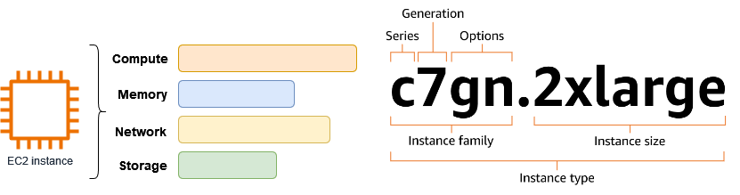
Resultados de aprendizaje y criterios de evaluacion que se evaluarán en esta unidad.
| Resultados de aprendizaje de la unidad didáctica: |
|---|
| RA. 2: Identifica los componentes clave de la infraestructura global de la nube, diferenciando servicios principales, regiones, zonas de disponibilidad y aplicando medidas básicas de seguridad como el modelo de responsabilidad compartida, gestión de accesos y protección de datos. |
| Criterios de evaluación de la unidad didáctica: |
|---|
| b) Se ha demostrado la capacidad para explorar y describir las principales categorías de servicios disponibles. |
| c) Se ha realizado una evaluación del uso adecuado de servicios básicos en ejercicios prácticos. |
| d) Se ha comprendido el modelo de responsabilidad compartida en la nube. |
| Resultados de aprendizaje de la unidad didáctica: |
|---|
| RA. 3: Diseña y configura redes virtuales y servicios de cómputo en la nube, aplicando buenas prácticas de seguridad, estrategias de balanceo de carga, escalado automático y aprovechando tecnologías serverless, contenedores y máquinas virtuales según casos de uso específicos. |
| Criterios de evaluación de la unidad didáctica: |
|---|
| a) Se ha realizado el diseño y configuración de redes virtuales privadas. |
| b) Se ha aplicado buenas prácticas de seguridad en redes y arquitecturas. |
| c) Se ha participado activamente en la creación y configuración de una red funcional. |
1 - Introducción
-
Uno de los servicios más utilizados de AWS es Amazon EC2 (Elastic Compute Cloud), que permite lanzar y administrar instancias, es decir, máquinas virtuales que funcionan de manera similar a un ordenador físico.
-
Estas instancias pueden configurarse con distintos sistemas operativos, hardware para adaptarse a las necesidades de cada proyecto (aplicación web, base de datos...).
-
Al igual que cualquier dispositivo, las instancias necesitan un mecanismo de control de tráfico para garantizar su seguridad. En este contexto aparecen los grupos de seguridad (Security Groups, SG). Un grupo de seguridad no es más que un firewall virtual, que supervisa y restrinje el tráfico entrante y saliente de las instancias.
-
En conjunto, las EC2 y los SG constituyen la base de la infraestructura en la nube: las instancias proporcionan la capacidad de cómputo, mientras que los grupos de seguridad ofrecen la primera línea de defensa para proteger los recursos desplegados.
2 - Instancias EC2
2.1 Instancias de AWS
-
Como hemos dicho, una instancia EC2 (Elastic Cloud Compute) es básicamente una computadora en la nube.
-
Al igual que los equipos físicos, las instancias se caracterizan por una serie de características como potencia de computo, RAM y otras características que veremos a continuación.
Nomenclatura de las instancias EC2
- El nombre de la instancia define las especificaciones de la misma es decir, la familia, la generación, la capacidad adicional y el tamaño.
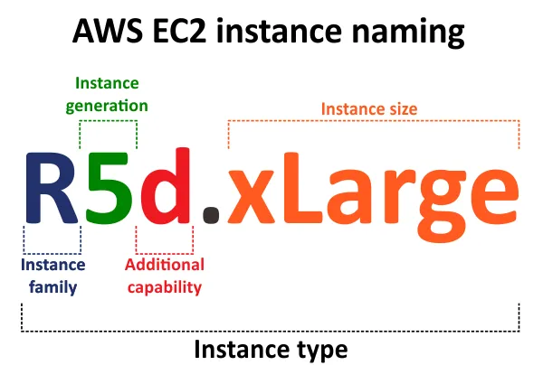
Familia
-
La familia define la optimización principal de la máquina, dicho en otras palabras, el uso preferente que debemos dar a esas máquinas.
Familia Aplicación M, T General Purpose. Equilibrio entre CPU, memoria, red y almacenamiento. Son adecuadas para la mayoría de aplicaciones y servidores habituales. Las T permiten aumentar temporalmente el rendimiento de CPU mediante créditos. C Compute Optimized. Optimizadas para aplicaciones que necesitan mucha capacidad de procesamiento (CPU) en relación con la memoria, como servidores web de alto rendimiento o procesamiento de datos. R, X Memory Optimized. Diseñadas para aplicaciones que necesitan mucha memoria RAM en relación con la CPU, como bases de datos, cachés y análisis de grandes cantidades de datos. I, D Storage Optimized. Diseñadas para aplicaciones que necesitan un almacenamiento local de gran capacidad o un elevado rendimiento de entrada/salida (I/O), como bases de datos y sistemas de procesamiento de datos. G, P Accelerated Computing. Incorporan GPU para acelerar determinadas cargas de trabajo, como procesamiento gráfico, inteligencia artificial, machine learning y computación científica. Hpc High Performance Computing (HPC). Diseñadas para cálculos científicos y técnicos que requieren una elevada capacidad de procesamiento y comunicación entre los nodos. Bare Metal Acceso directo al hardware físico. Instancias que se ejecutan sobre el servidor físico sin la capa de virtualización habitual para la instancia. Se utilizan cuando una aplicación necesita acceso directo al hardware o determinados requisitos de virtualización. Nota
AWS dispone de muchas otras familias y variantes especializadas. Para seleccionar una instancia EC2 se debe tener en cuenta principalmente la cantidad de CPU, memoria RAM, almacenamiento, red y aceleradores que necesita la aplicación.
Generación
- Representan la evolución tecnológica de las instancias. Cada nueva generación trae mejor rendimiento, menor coste por hora y mejor eficiencia energética.
- La generación de una instancia EC2 se identifica por el número que acompaña a la familia.
-
Ejemplos:
Instancias Descripción t2.micro 2ª generación de instancias de uso general. t3.micro 3ª generación, más eficiente que t2. t4g.micro 4ª generación, basada en procesadores ARM Graviton2 de AWS.
Capacidad adicional
- La capacidad adicional de EC2 se refiere a esas optimizaciones extra (almacenamiento, red, EBS, GPU, bare metal, etc.) que hacen que dos instancias de la misma familia y tamaño puedan comportarse de forma distinta.
-
Las letras utilizadas en el nombre de instancia y las propiedades asociadas se explican en la tabla siguiente.
Nombre Propiedad Ejemplo a Procesador AMD m5a d Almacenamiento SSD NVMe local m5d e Capacidad extra P6e g Procesador Graviton(ARM) m6g n Redes de alta velocidad c5n z Alta frecuencia de CPU m5zn .metal Bare metal m8g.metal
Tamaño de la instancia
- El tamaño de una instancia de EC2 en AWS se refiere a la combinación de recursos de hardware virtualizados (vCPU, memoria RAM, almacenamiento y capacidad de red) que se asignan a una máquina virtual.
- En otras palabras, define la potencia y capacidad de cómputo que tendrá la instancia dentro de la familia de instancias elegida.
-
Tabla comparativa de tamaños de instancias:
Instancia vCPU RAM (GB) Almacenamiento (GB) Red (Gbit/s) Ancho de banda de EBS Precio USD/h (% aumento) r5d.xlarge 4 32 1 x 150 Hasta 10 Hasta 4750 0.288 r5d.2xlarge 8 64 1 x 300 Hasta 10 Hasta 4750 0.576 (+100%) r5d.4xlarge 16 128 2 x 300 Hasta 10 4750 1.152 (+100%) r5d.8xlarge 32 256 2 x 600 10 6800 2.304 (+100%)
2.2 AMI (Amazon Machine Image)
-
Una AMI es una plantilla que contiene la información necesaria para lanzar una instancia de EC2. Es como si fuera la
imagen basede una máquina virtual. -
Cada AMI incluye:
- Un sistema operativo (Amazon Linux, Ubuntu, Windows Server, etc.).
- Software preinstalado (Apache, Nginx, MySQL, Docker, etc.).
- Configuración de permisos (qué usuarios pueden usar la AMI, no es posible hacerlo con las cuentas de ALB).
- Configuración de volumen raíz (el disco donde se instala el sistema).
- ...
-
Cuando se lanza una instancia EC2, se elige una AMI como punto de partida, y a partir de ahí la instancia puede configurarse, modificarse y personalizarse.
2.2.1 Tipos de AMI
En AWS, las AMIs se clasifican principalmente según su origen y propiedad, y según el método de virtualización que utilizan para arrancar las instancias de Amazon EC2
-
AMIs públicas
- Disponibles en el catálogo de AWS.
- Incluyen imágenes oficiales de Amazon (Amazon Linux, Windows, etc.) y distribuciones de Linux mantenidas por la comunidad o proveedores (Ubuntu, Debian, RHEL…).
-
AMIs privadas
- Creadas por un usuario.
- Solo accesibles para la cuenta propietaria (posibilidad de compartir).
-
AMIs del AWS Marketplace
- Imágenes de terceros (generalmente de pago) con aplicaciones ya listas (WordPress, SAP, soluciones de seguridad, etc.).
2.2.2 Regiones y AMIs
- Una AMI está ligada a una región.
- Si se necesita usarla en otra región, se debe copiar.
2.2.3 Crear una AMI
Se pueden crear AMI's desde:
- Una instancia EC2 existente → Tomar un snapshot y convertir en AMI.
- Un snapshot de EBS → Luego convertir en AMI.
- Importar una VM (desde VMware, VirtualBox o Hyper-V con la herramienta VM Import/Export).
2.3 Almacenamiento EBS (Elastic Block Store)
- EBS (Elastic Block Store) es el servicio de almacenamiento en bloque que se usa para las instancias EC2.
- Dicho en otras palabras, es el disco duro de las instancias y se puede usar para instalar el sistema operativo, guardar bases de datos, etc.
2.3.1 Concepto básico de EBS
Características principales de los almacenamientos EBS
- Persistente: los datos persisten aunque la instancia EC2 se detenga o se termine (si el volumen no se borra automáticamente al terminar la instancia).
- Redimensionable: Se puede cambiar el tamaño, tipo o rendimiento sin reiniciar la instancia (en muchos casos).
- Alta disponibilidad: cada volumen EBS se replica automáticamente dentro de la zona de disponibilidad (AZ) para protegerlo de fallos de hardware.
- Snapshots: Se pueden programar copias de seguridad incrementales en S3 (Snapshots EBS).
- Tipos de volumen: AWS ofrece varios tipos (SSD y HDD) adaptados al rendimiento y coste deseados:
- gp3/gp2: SSD de uso general.
- io1/io2: SSD de alto rendimiento para IOPS elevados.
- st1: HDD optimizado para throughput.
- sc1: HDD de bajo coste para datos menos usados.
2.3.2 Uso con EC2
- Al lanzar una instancia EC2, se crea automáticamente un volumen EBS para el sistema operativo.
- Se puede adjuntar varios volúmenes EBS a una misma instancia EC2.
- Se deben montar como dispositivos de bloque en el sistema operativo y luego se formatean y usan como cualquier disco.
- Es posible desadjuntar un volumen de una instancia y adjuntarlo a otra (útil para migrar datos).
2.3.3 Tipos de almacenamientos de AWS
AWS ofrece tres tipos principales de almacenamiento en la nube clasificados según cómo se estructuran y acceden los datos: almacenamiento de objetos (S3), almacenamiento en bloques (EBS), almacenamiento de archivos (EFS).
Almacenamiento de Objetos (Amazon S3 / bucket S3)
- Qué es: Guarda los datos como objetos individuales dentro de contenedores llamados buckets, junto con sus metadatos y un identificador único.
- Uso principal: Ideal para almacenar cualquier volumen de información como páginas web estáticas, copias de seguridad (backups), contenido multimedia y lagos de datos (data lakes).
- Servicio clave: Amazon S3 destaca por una durabilidad extremadamente alta (99,999999999%) y clases adaptables como S3 Standard, S3 Intelligent-Tiering y S3 Glacier para archivo a largo plazo.
Almacenamiento en Bloques (Amazon EBS)
- Qué es: Divide los datos en bloques de igual tamaño que funcionan como discos duros independientes. Requiere un sistema operativo gestionado para acceder a ellos.
- Uso principal: Diseñado como almacenamiento persistente de bajo nivel para instalar sistemas operativos, ejecutar bases de datos transaccionales y aplicaciones de alto rendimiento.
- Servicio clave: Amazon Elastic Block Store (EBS) se conecta directamente a las máquinas virtuales de Amazon EC2, permitiendo modificar el tamaño o crear instantáneas (snapshots) incrementales de forma sencilla.
- EBS instance store: Ideal para almacenamiento temporal de información que cambia constantemente. A diferencia de las Amazon EBS el almacenamiento es efímero y local (desaparece al detener/terminar la instancia y solo es accesible desde una EC2).
Almacenamiento de Archivos (Amazon EFS y FSx)
- Qué es: Organiza los datos en una jerarquía tradicional de carpetas y archivos compartidos mediante protocolos estándar de red (como NFS o SMB).
- Uso principal: Permite que múltiples servidores o usuarios accedan y modifiquen los mismos archivos de manera simultánea.
- Servicios clave:
- Amazon Elastic File System (Amazon EFS): Sistema de archivos compartido para instancias Linux en EC2.
- Amazon FSx: Familias de servicios optimizadas para sistemas de archivos especializados de terceros (como Windows File Server, Lustre o NetApp ONTAP).
2.4 Despliegue de una instancia Linux
- En este apartado lanzaremos una instancia EC2 linux en el siguiente escenario.
- De momento, no tendremos en cuenta los grupos de seguridad.

Preguntas
- Suponiendo que queremos usar la EC2 de la subred pública como servidor web (frontend), ¿Qué debemos hacer para ampliar la infraestructura e incorporar un servidor y una base de datos para el backend?
- Queremos, además, guardar imágenes, PDFs y vídeos para que los clientes puedan descargarlos.
- ¿Qué tipo de almacenamiento de AWS sería el más adecuado?
- Buscar un ejemplo de tipo de almacenamiento adecuado en AWS.
2.4.1 Infraestructura de red
- En la imagen podemos ver el mapa de recurso de la infraestructura de red desplagada.
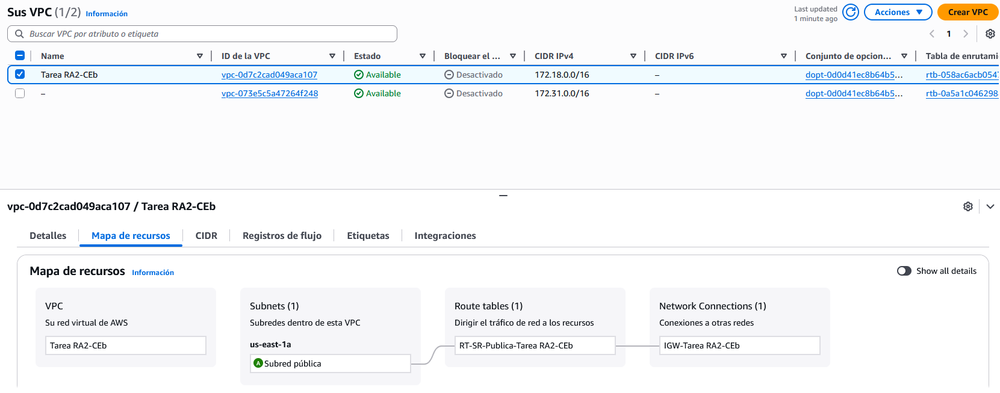
2.4.2 Lanzar instancia
Lanzar una EC2
Buscamos en AWS el recurso EC2 y pulsamos Lanzar la instancia.
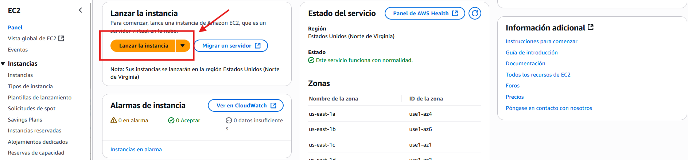
Menú de instancias EC2
Una vez dentro del menú de instancias veremos los apartados principales de EC2
- Instances (Instancias): Donde se puede lanzar, detener, reiniciar o terminar instancias EC2.
- Images (Imágenes): Donde se puede gestionar las AMIs, que son plantillas para lanzar nuevas instancias con un sistema operativo y software preinstalado.
- Elastic Block Store (EBS): Servicio de almacenamiento en bloques persistente. Permite crear y asociar volúmenes a las instancias EC2.
EBS no es específico de EC2 pero, tiene su menú de configuración dentro de la página de EC2.
- Network & Security (Red y seguridad): Desde aquí se gestion los Security Groups, Elastic IPs, Key Pairs y VPCs asociadas a las instancias. Básicamente, es donde se definen las reglas de seguridad y de conectividad.
- Load Balancing (Balanceo de carga): Sección para crear y administrar Elastic Load Balancers (ELB), que reparten el tráfico entre varias instancias.
- Auto Scaling: Aquí se configuran los Auto Scaling Groups, que crean o destruyen instancias automáticamente según las métricas (CPU, tráfico, etc.) para mantener el rendimiento.
Dar un nombre a la instancia
Seleccionar la AMI adecuada a nuestras necesidades
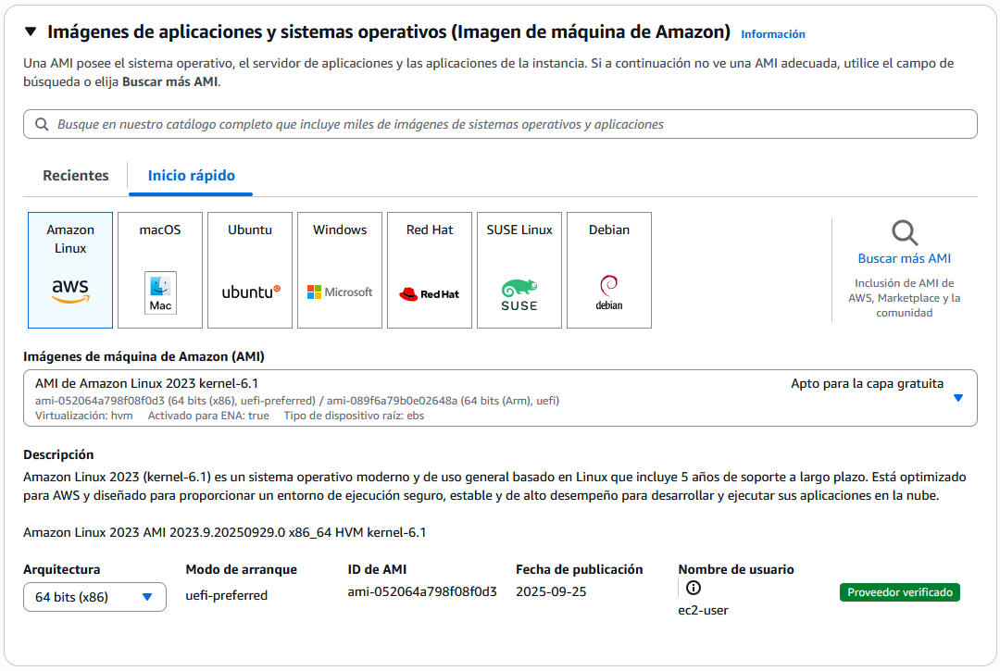
Seleccionar el tipo de instancia
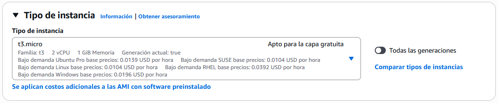
Elegimos el par de claves con el que podremos conectarnos por SSH a nuestra instancia.
- El par de claves (Key Pair) en AWS EC2 es un mecanismo de credenciales de seguridad basado en criptografía de clave pública (asimétrica) que se utiliza para autenticarse y acceder de forma segura a las instancias sin necesidad de usar contraseñas tradicionales.
Se compone de dos partes generadas conjuntamente:
Clave Pública (Public Key):
- AWS la inserta automáticamente dentro de la instancia EC2 al momento de crearla (en servidores Linux, se escribe en el archivo ~/.ssh/authorized_keys).
- Actúa como el candado de acceso a la instancia. Es pública y no importa si alguien más la ve, ya que solo sirve para validar que quien intenta conectarse posee la clave privada correcta.
Clave Privada (Private Key)
- En nuestro caso tendremos acceso a esa clave desde la consola de acceso al
Laboratorio de AWS. Dependiendo del tipo de instancia (Windows, Mac, Linux ) estará disponible con extensión.pemo.ppk.
- En nuestro caso el par de claves de laboratory será
vockey.
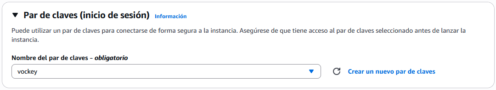
Configuración de red y seguridad
- Eligiremos la red donde vamos a desplegar nuestra instancia.
- Elegiremos también la opción
Crear grupo de seguridad. Veremos más adelante la importancia de los grupos de seguridad para la seguridad de los recursos desplagados (no solamente las EC2).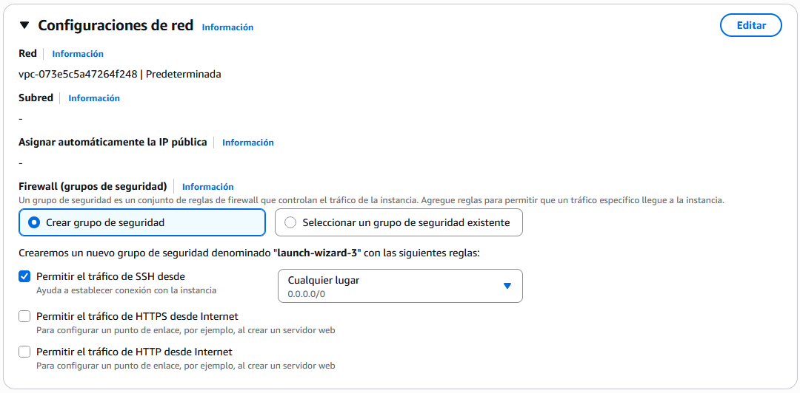
Elegir el tamaño del almacenamiento del volumen raíz
-
Eligiremos el tamaño y el tipo adecuado a nuestras necesidades.
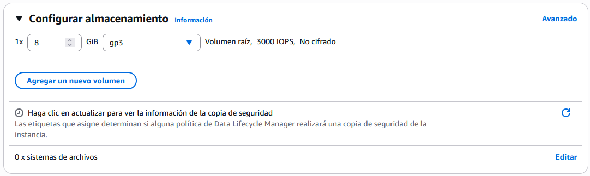
-
Si después de desplagar la instancia resulta que el volumen del almacenamiento es insuficiente podremos modificarlo (o añadir otro volumen).
- Para ello, basta con detener la instancia, ir al menú de los volumenes EBS y modificar el tamaño.
Importante
- Ampliar la capacidad del volumen no presenta ninguna dificultad.
- Reducirlo implica realizar una snapshot del mismo, eliminar el EBS original, crear y poner otro de menor tamaño.
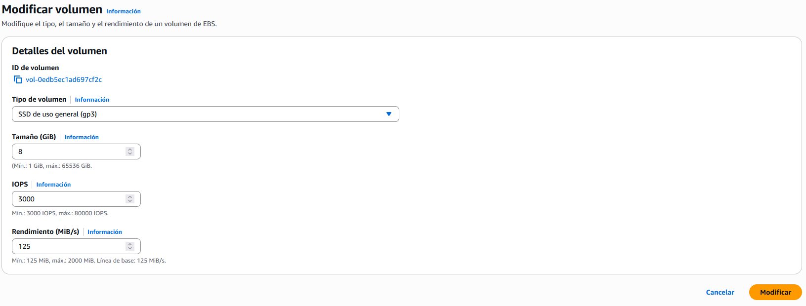
2.4.6 - Panel de control de las instancias
Una vez lanzada la instancia, podremos acceder a su panel de supervisión/configuración.
-
Instancias
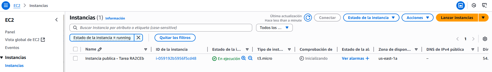
-
Resumen de las instancias
Importante
Asegurarse de que tener un IPv4 pública. De lo contrario no será posible conectarse remotamente a la instancia.
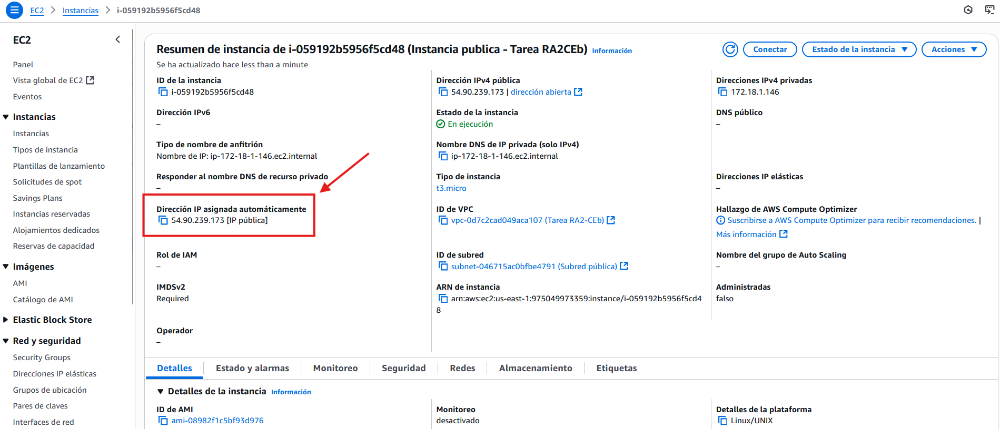
2.4.7 Conexión CLI remota SSH a la instancia (SO linux)
- El laboratorio crea por defecto una clave llamada vockey.
-
Esa llave que ya hemos usado a la hora de configurar nuestra instancia EC2 permitirá a un cliente SSH conectarse a ella de forma remota.
-
Descargar el archivo de clave privada labsuser.pem
- El fichero
labsuser.pemse encuentra disponible en AWS Academy Learner Lab enAWS Details. - El fichero
labsuser.pemcontiene la parte privada de la clave que necesitará el cliente SSH para conectarse a la EC2 en la cual se encuentra instalada la parte pública de la clave.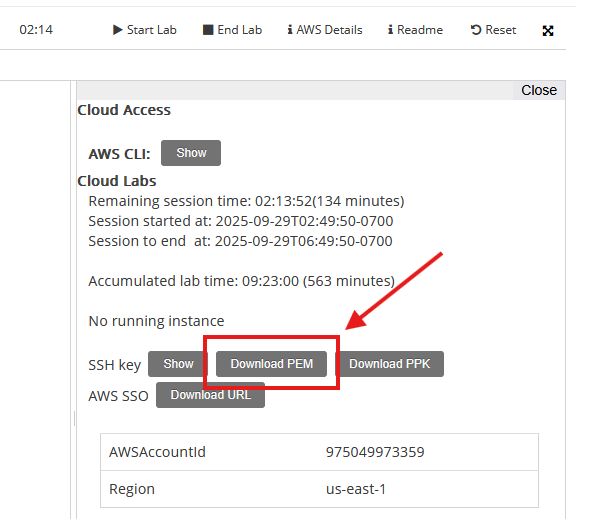
- El fichero
-
Cambiar los permisos del archivo labsuser.pem Para cambiar los permisos a solo lectura por el propietario usaremos:
-
Conexión remota por SSH a la instancia
Para conectarnos a la instancia por SSH usaremos el cliente de ssh con los siguientes argumentos:
Explicación del comando
🔹ssh: Cliente de Secure Shell, que permite conectarte de forma remota y segura a otro equipo.
🔹-i labsuser.pem: La opción -i especifica la clave privada (labsuser.pem) que se usará para autenticarse.
🔹ec2-user@3.90.114.96: Indica usuario y dirección de la instancia a la que nos queremos conectar.¿Cómo saber nuestro nombre de usuario?
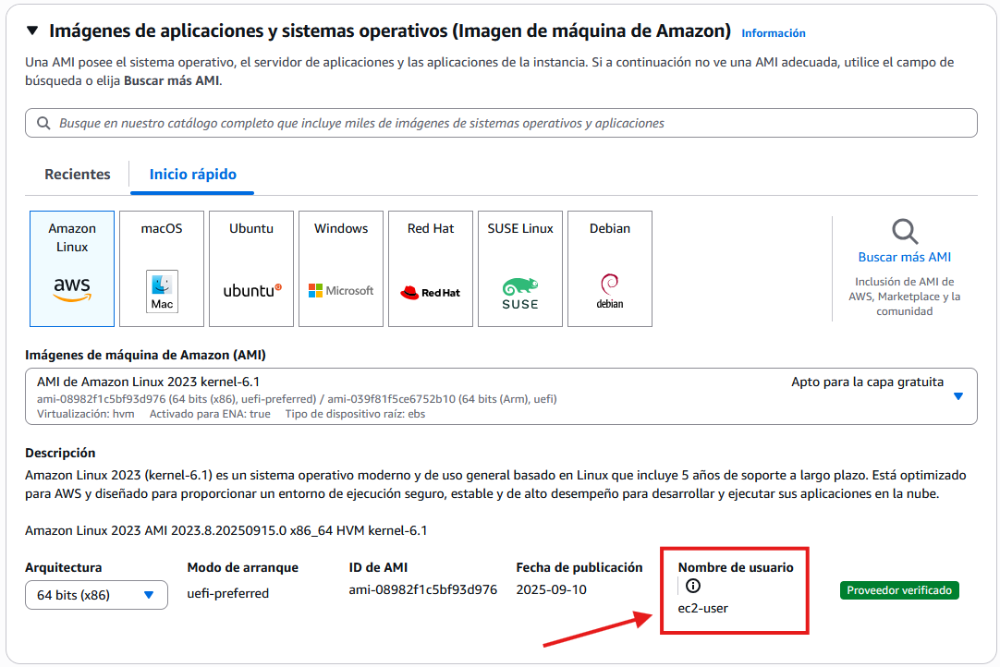
¿Cómo saber la ip de la instancia?
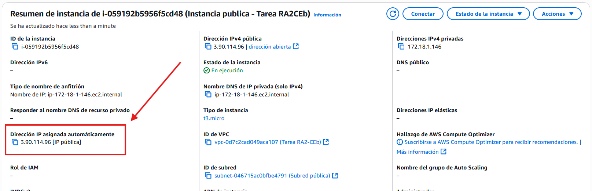
2.4.8 Conexión con la instancia desde la consola de AWS
-
También es posible conectarse a la instancia desde el panel de control de AWS.
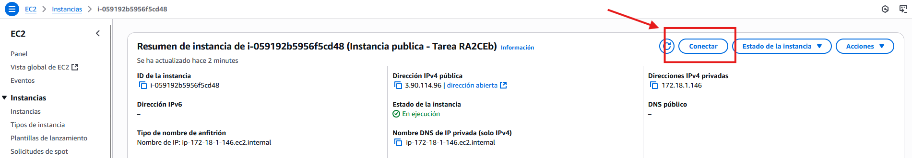
-
Podremos elegir entre 4 tipo de conexiones. Por limitaciones de Roles y Permisos de LabRole, solo podremos usar la opción de conexión a subredes públicas con claves SSH administradas.
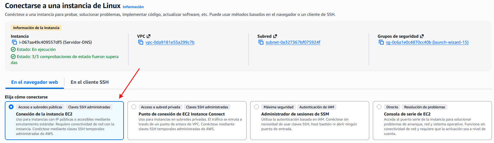
-
Una vez hecha la conexión podremos usar ese servicio virtualizado.
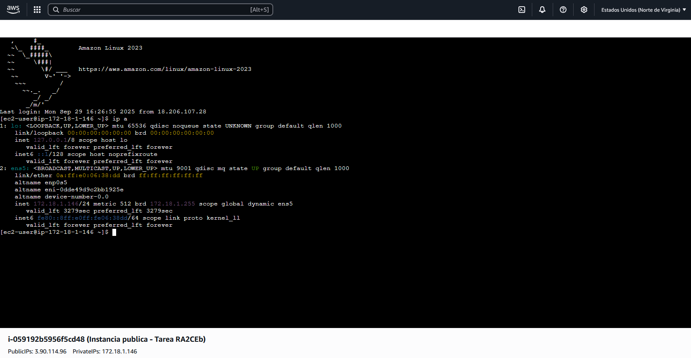
2.4.9 Realizar ping a la instancia
- Si queremos realizar un ping a la instancia desde cualquier ordenador veremos que no es posible.
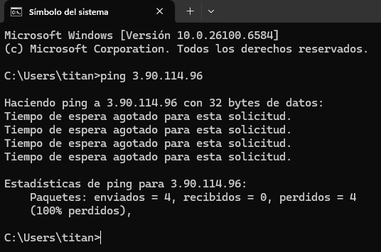
¿Por qué no es posible realizar un ping a la instancia?
-
Para poder realizar el ping deberemos agregar reglas al grupo de seguridad de la instancia. En este caso añadiremos una regla de protocolo de mensajes de control de Internet ICMP.
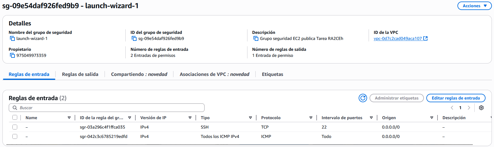
-
Después de agregar la regla ICMP sí que será posible realizar un ping a nuestra instancia.
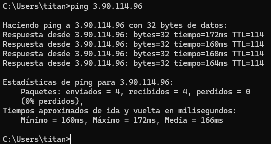
-
Los grupos de seguridad son una parte fundamental de la seguridad en la nube. Permiten controlar el tráfico entrante y saliente de las instancias EC2. Por ese motivo se deben conocer y configurar correctamente para garantizar la seguridad de los recursos desplegados en AWS.
3 - Grupos de seguridad (SG) y listas de control de acceso (ACL)
3.1 - Introducción
- Los grupos de seguridad y las ACL de red y de VPC son componentes fundamentales de la seguridad en un entorno de nube.
- Aunque funcionan de manera similar a los firewalls, no son exactamente lo mismo, ya que presentan diferencias en su comportamiento (stateful / stateless) y alcance (nivel de instancia / nivel de subred).
- Dentro del modelo de nube pública, el proveedor está obligado contractualmente a cumplir con su parte del modelo de responsabilidad compartida. Sin embargo, la configuración de los grupos de seguridad es responsabilidad del cliente.
- Por defecto, al lanzar una instancia EC2 en AWS, la única regla permitida es la apertura del puerto 22 para el acceso SSH. Es posible editar esa configuración durante el lanzamiento de la instancia, así como durante todo el ciclo de vida de la instancia.
- Para garantizar el correcto despliegue de las aplicaciones, será necesario ampliar las reglas de los grupos de seguridad, asegurando siempre que estas configuraciones no comprometan la seguridad del entorno.
3.2 Grupos de seguridad
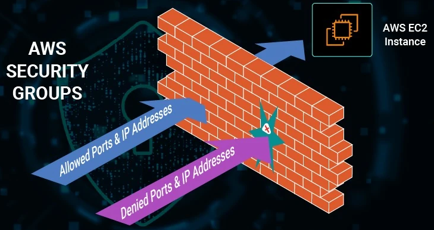
3.2.1 Definición y función de un grupo de seguridad
¿Qué es un grupo de seguridad?
Un grupo de seguridad es un conjunto de reglas de firewall virtual que controlan el tráfico entrante y saliente de una instancia.
Tráfico entrante:
- Las reglas de tráfico entrante deciden qué puede entrar a la instancia. Es decir, qué protocolo de red y qué IP o rango de IPs, podrán realizar conexiones entrantes a la instancia.
Tráfico saliente:
- Las reglas de tráfico saliente deciden qué puede salir a la instancia.
Importante
- Las reglas de los grupos de seguridad deciden qué tráfico se permite, quedando automaticamente el resto de tráfico prohibido.
- A diferencia de las ACL de red (que veremos más adelante), las reglas de los grupos de seguridad no tienen orden de prioridad. Todas se evalúan en conjunto y solo pueden permitir tráfico. Si no existe una regla que lo permita, el tráfico se deniega por defecto.
- Los grupos de seguridad se aplican a nivel de instancia, no a nivel de subred (de esa función se encargan las ACL de red).
Reglas stateful
- Los grupos de seguridad son por naturaleza con estado (stateful): las respuestas al tráfico permitido se aceptan automáticamente sin necesidad de una regla explícita en la dirección opuesta.
- Esto no significa que la entrada y la salida sean simétricas, sino que el tráfico de retorno está permitido.
Ejemplo
- Permitir que todo el mundo (0.0.0.0/32) visite mi sitio web en el puerto 443 (HTTPS).
- Bloquear todo lo demás (entre otros, rechazar conexiones HTTP sobre el puerto 80).
Resumen de características de un grupo de seguridad
- Todo lo que no está permitido explícitamente está prohibido.
- Configuración por defecto del SG:
- Tráfico entrante: Solo se aceptan conexiones SSH sobre el puerto 22 (TCP).
- Tráfico saliente: Todo está permitido. Es decir, la instancia puede conectarse a cualquier IP.
-
Los grupos de seguridad son por naturaleza con estado (stateful): las respuestas al tráfico permitido se aceptan automáticamente sin necesidad de una regla explícita en la dirección opuesta.
Ejemplo
- Si permitimos tráfico ICMP de salida, la instancia podrá hacer
pinga cualquier IP pública. - Las respuestas ICMP (eco reply), es decir tráfico de entrada, se permitirán automáticamente.
- Si no tenemos una regla ICMP de entrada, nadie podrá iniciar un ping hacia la instancia.
- Si permitimos tráfico ICMP de salida, la instancia podrá hacer
-
Las reglas de un SG no tienen orden de prioridad.
- Todas se evalúan en conjunto y solo pueden permitir tráfico. Si no existe una regla que lo permita, el tráfico se deniega por defecto.
- Cada instancia debe tener al menos un grupo de seguridad.
- Cada instancia puede tener hasta 5 grupos de seguridad, lo que permite gestiones las reglas de una manera eficiente.
- Varias instancias pueden compartir un mismo grupo de seguridad.
- Los grupos de seguridad son específicos a una zona y VPC es decir, no se puede compartir entre instancias en VPC o regiones distintas.
3.2.2 Configuración de las reglas de entrada y salida
- Para que una instancia funcione correctamente y esté segura, es imprescindible definir las reglas de entrada (inbound) y de salida (outbound) del grupo de seguridad (SG):
Reglas de entrada:
- Controlan qué tráfico puede entrar a la instancia desde Internet u otras redes.
- Por defecto las EC2 solo aceptan conexiones SSH.
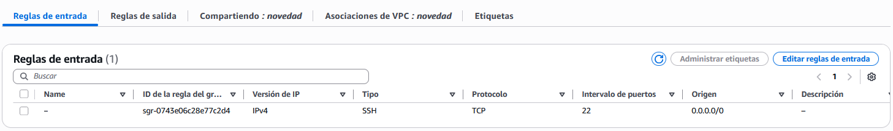
Modificar las reglas de seguridad de nuestra instancia de Linux
- Permitir el puerto 80 (HTTP) y 443 (HTTPS) para que una web sea accesible públicamente desde nuestra IP.
Reglas de salida:
- Controlan qué tráfico puede salir desde la instancia hacia otras redes o Internet.
- Por defecto, AWS permite todo el tráfico de salida.
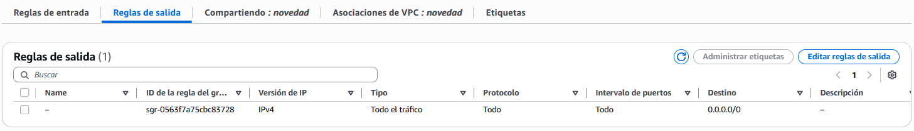
Modificar las reglas de seguridad de nuestra instancia de Linux
- Restringir el tráfico ICMP a nuestra IP.
Importante
- El destino y el origen del tráfico puede ser un CIDR o otro grupo de seguridad (lo veremos más adelante).
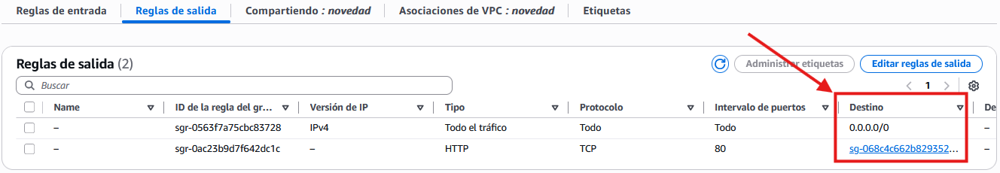
-
Resumen:
Tipo de regla Qué tráfico puede iniciar una conexión Ejemplo Entrada (Inbound) Qué tráfico puede iniciar conexión hacia la instancia. Permitir SSH (22) desde determinadas IP's. Salida (Outbound) Hacia qué destinos puede iniciar conexión la instancia. Permitir HTTP (80) hacia Internet.
3.2.3 - Ejemplo de SG
- En el siguiente ejemplo tenemos una VPC, una subred con una instancia EC2, una puerta de enlace de Internet y un grupo de seguridad.
- Como hemos dicho el grupo de seguridad se asigna a la instancia y actúa como un firewall virtual.
-
El único tráfico que llega a la instancia es el permitido por las reglas del grupo de seguridad.
-
Infraestructura
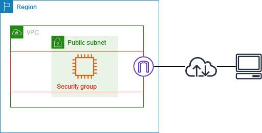
-
Configuración de las reglas de entrada de la instancia
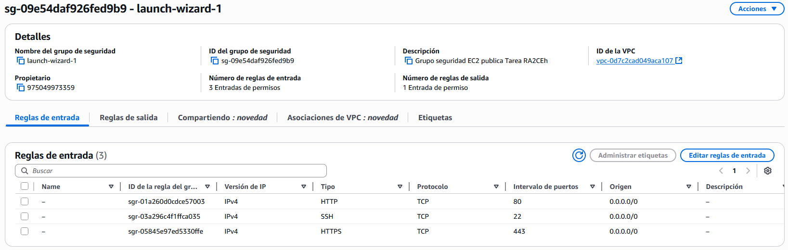
3.3 Tarea RA2-CEb
- Retomar el escenario anterior.
-
Ampliar el escenario con una segunda instancia que se encontrará en una subred privada. El escenario quedará de la siguiente manera:
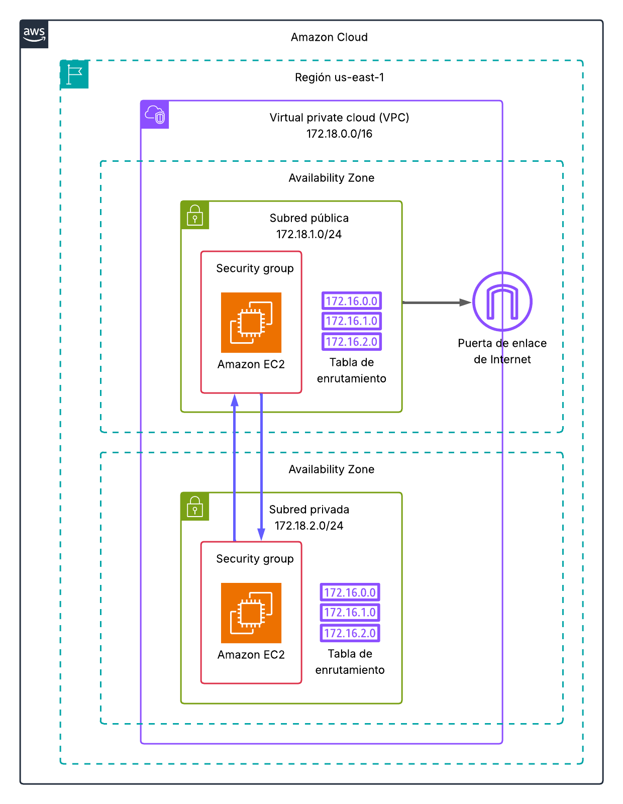
-
Poblar las RT para que la instancia de la subred pública tenga acceso a internet y la instancia de la subred privada no.
-
Poblar los grupos de seguridad de la siguiente manera:
Instancia Subred Grupo de Seguridad Reglas de Entrada Reglas de Salida Web Pública SG-Web 80, 443 desde Internet; 22 desde IP admin Todo permitido (o restringir a lo necesario) DB Privada SG-DB 3306 desde SG-Web Todo permitido (o restringir a lo necesario)
Entrega de la tarea
- Realizar capturas de pantalla de los momentos clave de la realización de la tarea.
- Comentar las captura de pantalla explicando el trabajo realizado para llegar a ese punto y el resultado obtenido.
- Guardar el documento con RA2-CEb-NombreApellidos y subirlo a la tarea correspondiente de Aules.
- A partir de momento de apertura de la tarea, dispondréis de 2 semanas para subir vuestros trabajos.
- Pasado ese tiempo la tarea se cerrará y ya no será posible subir vuestras respuestas.
3.4 Listas de control de acceso (ACL) de red
3.4.1 Definición y función de una lista de control de acceso
¿Qué es una lista de control de acceso ACL?
Las Network ACL (NACL) son un componente de seguridad que actúa a nivel de subred dentro de una VPC.
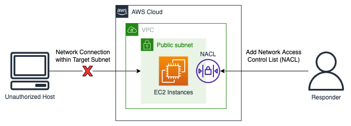
Características de las NACL
- Se aplican a nivel de subred: Todas las instancias dentro de esa subred quedan sujetas a las reglas de la ACL.
- Cada VPC en AWS tiene una ACL por defecto, y se pueden crear ACLs personalizadas para afinar el control del tráfico.
- Son sin estado (stateless): No recuerdan el estado de la conexión. Por ejemplo, si se permite el tráfico entrante en un puerto, también se debe permitir explícitamente el tráfico de salida de respuesta.
- Soportan reglas de entrada y salida:
- Reglas de entrada → Controlan tráfico entrante a la subred.
- Reglas de salida → Controlan tráfico saliente desde la subred.
- Orden numérico de las reglas
- Cada regla tiene un número (del 1 al 32766).
- Se evalúan en orden ascendente → la primera regla que coincida se aplica, y se ignoran las siguientes.
- Acciones posibles
ALLOW: Permitir tráfico.DENY: Bloquear tráfico.
- ACL por defecto
¡Por defecto, todo está abierto en las NACL!
- La ACL por defecto de una VPC permite todo el tráfico entrante y saliente.
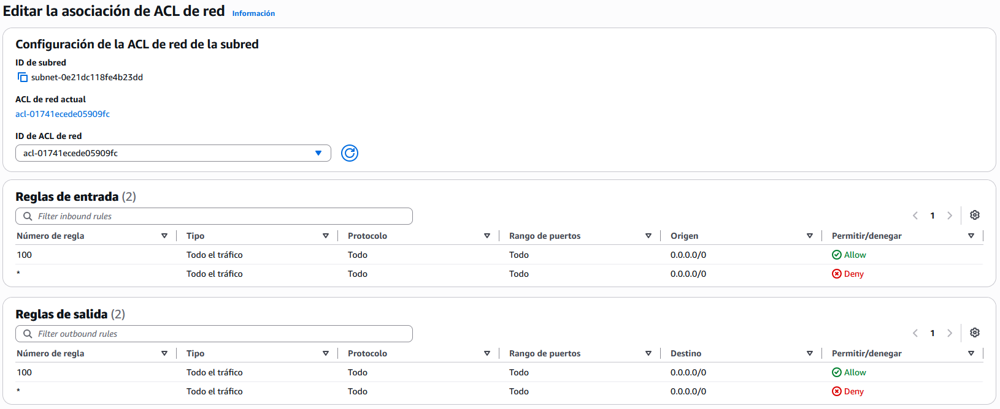
3.4.2 Ejemplo de ACL
- En el siguiente ejemplo, tenemos una VPC con dos subredes.
- Cada subred tiene una ACL de red. Cuando el tráfico entra en la VPC, el enrutador envía el tráfico a su destino.
- La ACL de red A determina qué tráfico destinado a la subred 1 puede entrar en la subred 1, y qué tráfico destinado a una ubicación fuera de la subred 1 puede salir de la subred 1.
- Del mismo modo, la ACL de red B determina qué tráfico puede entrar y salir de la subred 2.
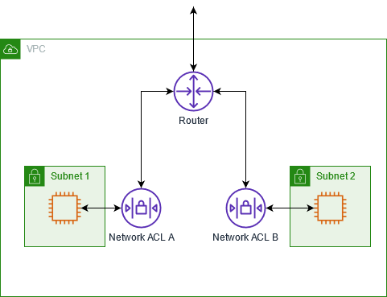
Si vamos a AWS y consultamos las ACL de cada red veremos que, como hemos dicho anteriormente, todo el tráfico entrante y saliente está permitido por defecto.
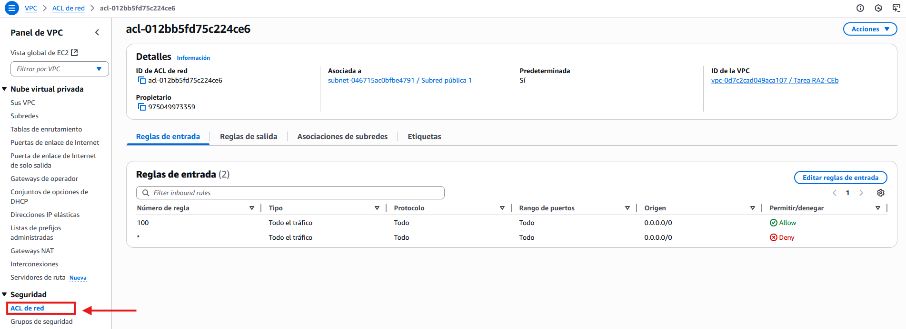
3.5 Tabla comparativa entre SG y ACL
| Característica | Security Groups (SG) | Network ACLs (NACL) |
|---|---|---|
| Naturaleza | Stateful (tienen “efecto memoria”) | Stateless (no recuerdan conexiones) |
| Nivel de aplicación | Asociados a instancias EC2 (interfaz de red) | Asociados a subredes |
| Reglas de entrada y salida | Reglas de entrada y salida se procesan por separado, pero las respuestas se permiten automáticamente | Se deben definir reglas para entrada y salida; si no, el tráfico será bloqueado |
| Orden de evaluación | No tienen orden; se procesan todas las reglas | Se procesan en orden ascendente por número de regla (más bajo = mayor prioridad) |
| Acciones | Solo permiten Allow (permitir tráfico) | Admiten Allow y Deny (puedes denegar explícitamente) |
| Predeterminado | Todo el tráfico está denegado por defecto (excepto lo que se permita explícitamente) | Todo el tráfico está permitido por defecto (excepto lo que se niegue explícitamente) |
| Casos de uso típicos | Control fino del tráfico a instancias (ej. abrir 22/SSH o 443/HTTPS) | Control global a nivel de subred, aplicar restricciones más amplias (ej. denegar rangos IP completos) |
3.6 Tarea RA2-CEc
-
Ampliar el escenario anterior para que quede de la siguiente manera:
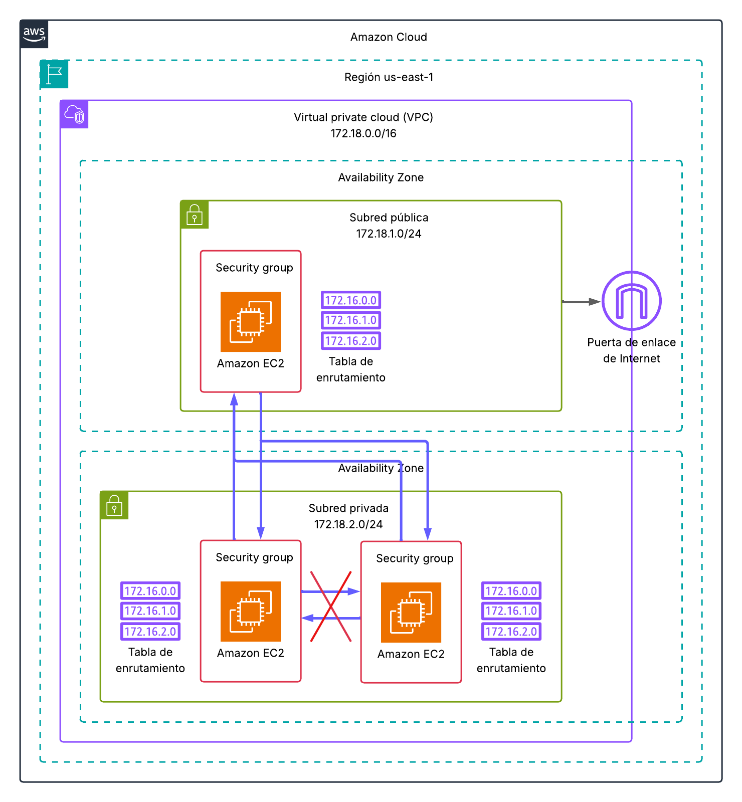
-
Reflexionar sobre como impedir que las instancias de la subred privada no puedan establecer conexiones la una con la otra.
- Realizar las modificaciones necesarias a los SG y ACL para impedir dicho tráfico.
¡Bonus track!Lanzar en la subred pública una instancia deWindows Server 2025y realizar una conexión por RDP a dicha instancia.
Entrega de la tarea
- Realizar capturas de pantalla de los momentos clave de la realización de la tarea.
- Comentar las captura de pantalla explicando el trabajo realizado para llegar a ese punto y el resultado obtenido.
- Guardar el documento con RA2-CEc-NombreApellidos y subirlo a la tarea correspondiente de Aules.
- A partir de momento de apertura de la tarea, dispondréis de 2 semanas para subir vuestros trabajos.
- Pasado ese tiempo la tarea se cerrará y ya no será posible subir vuestras respuestas.
4 - OFFTOPIC sobre Cloud9
- Cloud 9 es un entorno de desarrollo integrado (IDE) basado en la nube que permite a los desarrolladores escribir, ejecutar y depurar código directamente desde un navegador web sin necesidad de instalar nada en el equipo local.
- Proporciona un entorno de desarrollo completo con soporte para múltiples lenguajes de programación, integración con servicios de AWS y colaboración en tiempo real.
- Está completamente integrado con los servicios de AWS (como EC2, Lambda, S3 o CloudFormation) y propone una terminal Linux completa dentro del entorno, como si estuvieramos conectado por SSH a una instancia EC2.
Creación de un entorno Cloud9
- Buscamos y creamos el recurso dentro de la consola de AWS.
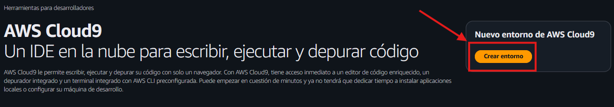
- Rellenamos los campos necesarios. Es posible crear el recurso sobre una instancia ya existente pero, en esta caso, lanzaremos una instancia nueva.
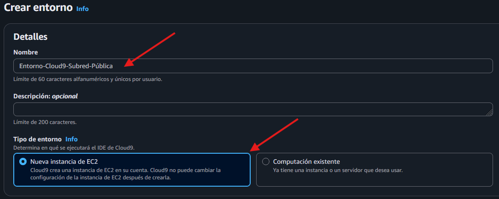
- Seleccionamos el tipo de instancia.
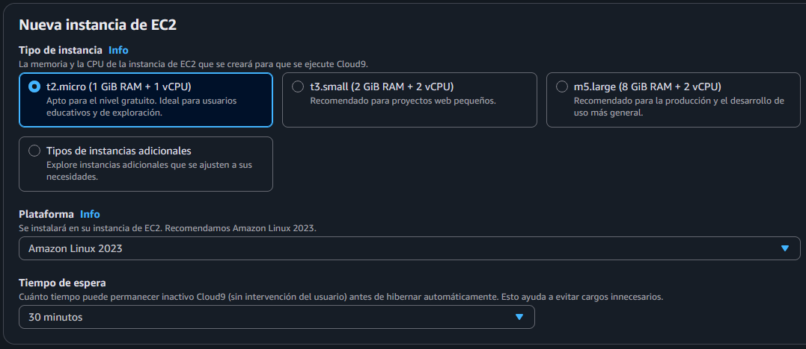
- Seleccionamos la VPC y la subred donde desplegaremos el servicio.
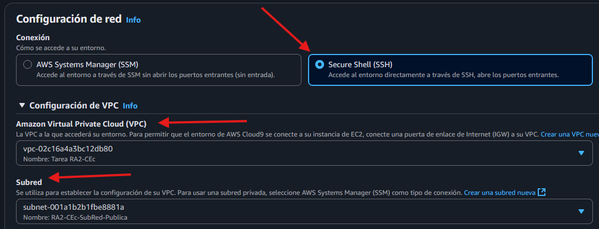
- Esperamos a que el servicio esté disponible y luego ya lo podremos usar.
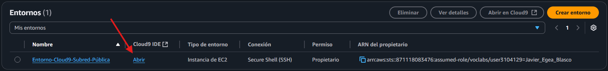
- Ejemplo de ejecución de un programa de python.
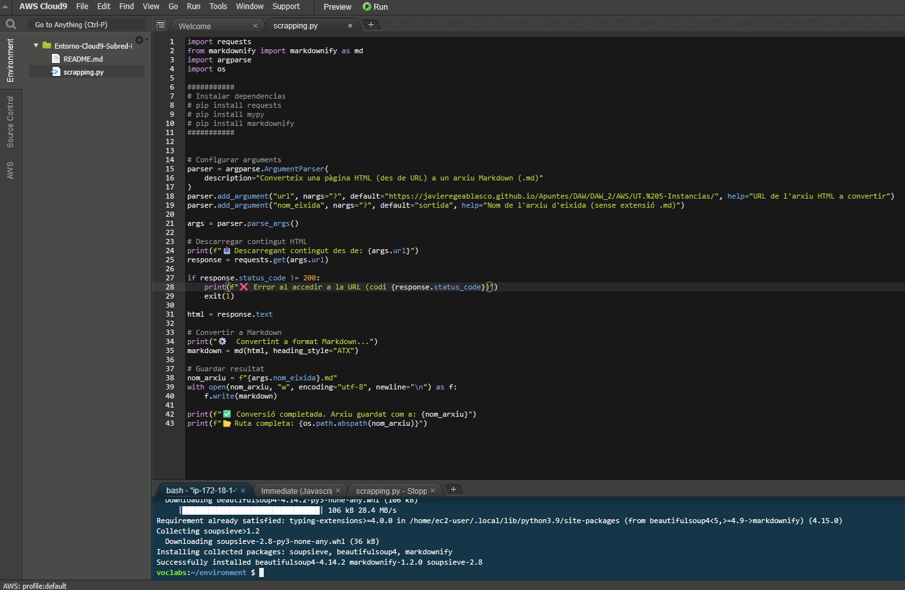
- Intentamos conectarnos por ssh a cualquier otra instancia pero tampoco funciona.
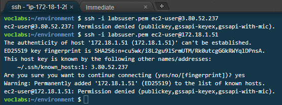
- **Conexión mediante instancia bastión**
En este caso, utilizaremos la instancia pública a la que tenemos acceso como una instancia bastión. Es decir, primero nos conectaremos a ella y, desde allí, estableceremos una conexión SSH hacia las instancias ubicadas en la subred privada.
Para poder conectarnos por SSH a la EC2 de la subred privada, necesitaremos trasladar el archivo de la clave privada a la EC2 pública.
Mover nuestra clave privada no se considera una buena práctica desde el punto de vista de la seguridad informática, pero nos permitirá familiarizarnos con nuevas funcionalidades de AWS.
- **Opción 1: Mover archivo con scp**
En este caso usaremos el comando `scp` (Secure CoPy) para enviar el archivo *.pem desde la máquina local a la instancia EC2 pública.<br>
En linux usaremos el comando:
```bash
scp -i <ARCHIVO_PEM> <ARCHIVO_A_TRANSFERIR> <NOMBRE_DE_USUARIO>@<IP_DE_LA_INSTANCIA>:<RUTA_ARCHIVO_DESTINO>
```
Donde -i especifica la clave privada.<br>
{.original}<br>
A partir de entonces, ya tendremos disponible dentro de nuestra EC2 pública la clave privada para conectarnos a las EC2 privadas.
{.original} <br>
4 - NAT gateway
- NAT gateway es un servicio de traducción de direcciones de red (NAT) que permite a las instancias de una subred privada tener acceso a Internet o a otros servicios de AWS, sin exponer sus IP privadas.
- Este servicio resulta particularmente útil por necesidad de los servicios de las EC2 de la subred privada (p.e. actualización de software) a la vez que impide que servicios externos inicien una conexión con esas instancias.
4.1 - Características de un NAT Gateway de AWS
-
Solo existe un tipo de NAT Gateway, pero puede actuar como:
- NAT Gateway público: cuando está en una subred pública y tiene asociada una Elastic IP (EIP).
- NAT Gateway privado: cuando está en una subred privada y se usa para enrutar tráfico hacia otra VPC o VPN, sin acceso a Internet.
-
Debe crearse en una zona de disponibilidad específica (AZ).
- Soporta los protocolos: TCP, UDP y ICMP.
- No se le puede asociar un grupo de seguridad (Security Group); en su lugar, se controlan los accesos mediante las Listas de Control de Acceso (ACLs) de red.
4.2 - Tipos de despliegue
- NAT Gateway público
Se ubica en una subred pública.
Se le asigna una Elastic IP.
Permite que las instancias en una subred privada puedan acceder a Internet.
No permite que el tráfico desde Internet inicie conexiones hacia las instancias privadas.
- NAT Gateway privado
Se ubica en una subred privada pero se usa en conjunto con un Transit Gateway o una VPN/Direct Connect. No tiene Elastic IP. Sirve para enrutamiento privado: Las instancias en una subred privada pueden comunicarse con otras redes (VPCs, etc.) y ocultan sus direcciones privadas detrás de una IP en el lado del NAT.
- Resumen comparativo:
| Característica | NAT Gateway Público | NAT Gateway Privado |
|---|---|---|
| Ubicación | Subred pública | Subred privada |
| Elastic IP | Requiere una Elastic IP | No necesita Elastic IP |
| Acceso a Internet | Permite que las instancias privadas accedan a Internet | No tiene acceso directo a Internet |
| Rutas (Route Table) | Las subredes privadas deben tener una ruta hacia el NAT Gateway | Se usa para enrutar tráfico hacia otra VPC o VPN |
| Uso típico | Salida a Internet desde instancias privadas (actualizaciones, descargas, etc.) | Comunicación privada entre redes sin exposición pública |
| Seguridad | No admite SG's, solo ACL de red | No admite SG, solo ACL de red |
| Alta disponibilidad | Se debe desplegar uno por zona de disponibilidad (AZ) | Uno por AZ si se requiere redundancia |
| Protocolos soportados | TCP, UDP, ICMP | TCP, UDP, ICMP |
4.3 - Tarea RA2-CEd
Para realizar la tarea retomaremos el escenario de la Tarea RA2-CEc, y pondremos un NAT gateway público para que las instancias de la subred privada puedan acceder a internet.
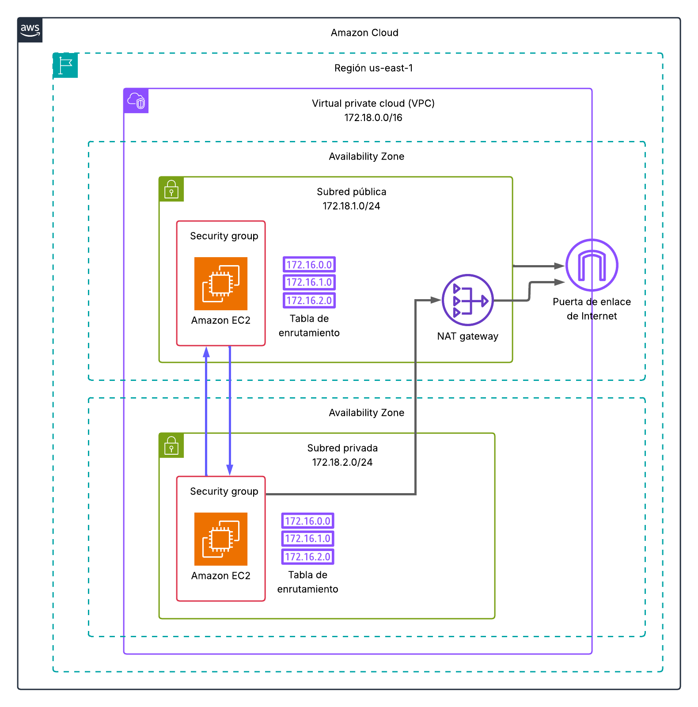
Este esquema tiene un error de concepto aunque siempre se representa de esa manera ¿Cuál?
4.3.1 - Crear el NAT Gateway
Vamos al menú de NAT Gateway y creamos nuestro NAT Gateway.
Si no tenemos ninguna IP elástica, dejaremos que AWS le asigne una.
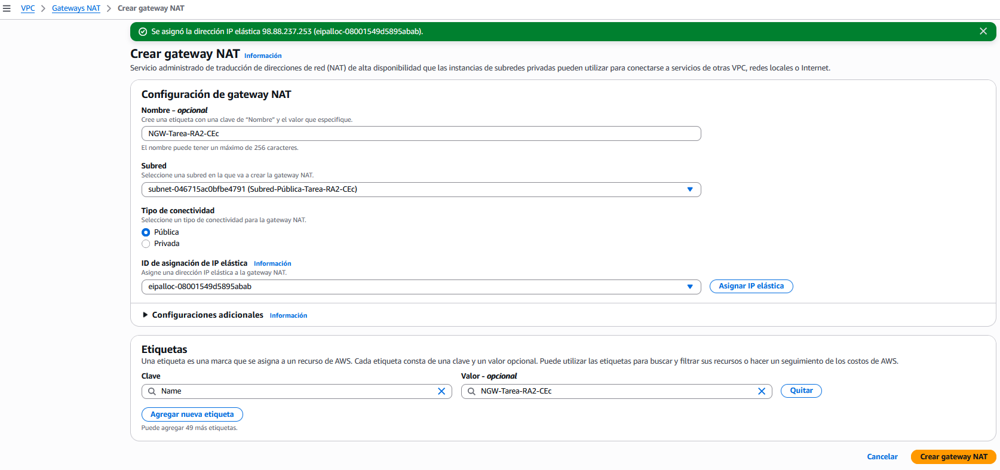
4.3.2 - Modificar la tabla de enrutamiento
Enlazamos todo el tráfico hacia internet de la tabla de enrutamiento de la subred privada hacia el NAT Gateway
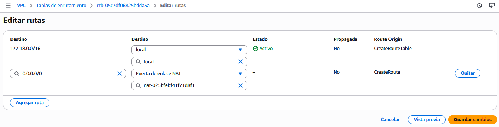
4.3.3 - Conexión a la EC2 de la subred privada
Al carecer, la EC2 de la subred privada de IP pública, para poder conectarnos a ella, primero deberemos conectarnos a la EC2 de la subred pública, y luego, desde ella, conectarnos a la EC2 de la subred privada.
Preparación de las variables de entorno
Antes de conectar por SSH a una instancia, es recomendable preparar el entorno de autenticación cargando la clave privada en el agente SSH.
-
Ejecutar ssh-agent en segundo plano
-
Cargar en memoria la clave privada de la instancia
-
Comprobar las claves añadidas al agente ssh
¿Por qué usar ssh-agent?
El agente SSH permite mantener las claves privadas cargadas en memoria durante la sesión.
Ventajas:
- Evita tener que escribir la ruta o la contraseña de la clave en cada conexión.
- Mejora la seguridad, ya que la clave no se guarda en texto plano ni se reenvía en cada conexión.
- Facilita la autenticación si se conectan varias veces a la misma instancia o a distintos servidores dentro del mismo entorno.
Conexión a la instancia EC2 mediante SSH
Una vez configurado el agente SSH y cargada la clave privada, nos conectaremos a la instancia EC2 de la subred pública.
Nota:Con la opción -A, las claves se mantienen en memoria.
Ya no es necesario utilizar la opción -i para especificar la clave privada que se usará.
Conexión a la instancia EC2 de la subred privada
Una vez conectados a la instancia pública, desde ella nos conectaremos a la instancia de la subred privada.
4.3.4 - Condiciones de entrega de la tarea RA2-CEd
Tarea RA2-CEd: Pruebas de ping
Comprobar:
Realizar una prueba de ping de las 2 instancias hacia internet (p.e google.es).
Realizar capturas (3 capturas en total).
5 - Gestión de los EBS asociados a las instancias
Aunque en la consola de EC2 podamos gestionar los volúmenes EBS asociados a nuestras instancias, EC2 y EBS son servicios independientes dentro de AWS.
-
Modificar volumen Desde el menú de la instancia o directamente desde el menú EBS seleccionamos modificar volumen y lo ajustamos al tamaño deseado (p.e. 20 GiB).
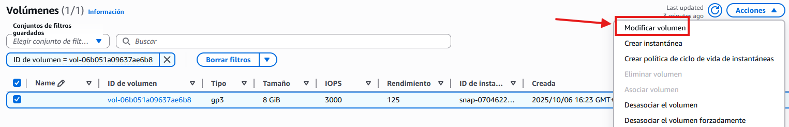
No saldrá el siguiente mensaje de advertencia:
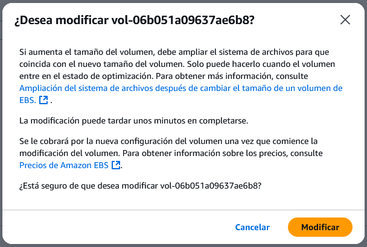
Confirmamos y seguimos.
-
Ampliación de un sistema de archivos después de cambiar el tamaño de un volumen de Amazon EBS (solo EC2 amazon linux)
Toda la información aquíConéctarse a la instancia con SSH y listar dispositivos (de bloque).
Utilizaremos el comando lsblk para comparar el tamaño de la partición con el tamaño del volumen.
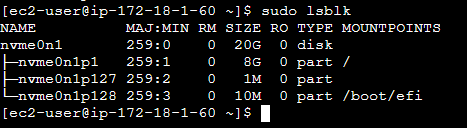
Ampliar la partición
Si no coincide el tamaño del volumen con el tamaño de la partición deberemos ampliarla con growpart.
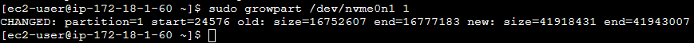
Comprobar que la partición se ha ampliado
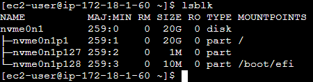
Comprobar el tamaño del sistema de archivos
Con df -hT podemos comprobar el tamaño y el tipo de sistema de archivos de cada dispositivo. En este caso, verificaremos si /dev/nvme0n1p1 (la partición actual) y /dev/nvme1n1 (el nuevo volumen EBS) tienen el mismo tamaño. Si el tamaño del nuevo volumen es mayor, será necesario ampliar el sistema de archivos para aprovechar todo el espacio adicional disponible en el volumen.
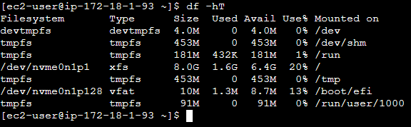
Ampliar el sistema de archivos
Para un sistema de archivos XFS usaremos xfs_growfs.
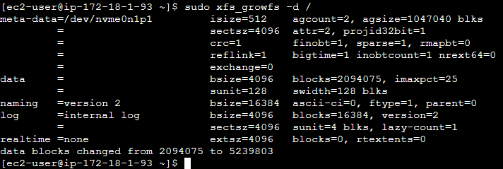
Comprobamos de nuevo el tamaño de la partición:
Ya podemos usar esa partición.
2.4.11 - Añadir un EBS a la instancia
En muchos casos puede resultar necesario añadir volúmenes EBS adicionales a una instancia, ya sea para ampliar capacidad, separar datos del sistema operativo, realizar migraciones o incluso compartir información entre diferentes instancias (adjuntando y desadjuntando volúmenes).
-
Crear un volumen EBS
Nota importante:
El volumen debe crearse en la misma zona de disponibilidad que la EC2. -
Adjuntar el volumen EBS a la instancia EC2
Si volvemos al menú de volúmenes EBS, veremos que el nuevo volumen aparece como disponible.Seleccionamos el EBS disponible y lo asociamos.
Si volvemos a la EC2, en el apartado Almacenamiento veremos los EBS asociados a la instancia.
-
Adjuntar un volumen de Amazon EBS a una instancia de Amazon EC2
Toda la información aquíConéctarse a la instancia mediante SSH
Utilizaremos el comando lsblk para ver los dispositivos de disco disponibles y sus puntos de montaje (si los hay).
Como podemos ver en la imagen el volumen adjunto es /dev/nvme1n1. No tiene particiones ni se ha montado aún.
Determinar si hay un sistema de archivos en el volumen
Utilizaremos el comando file -s para obtener información sobre un dispositivo. Si el resultado es data, significa que no se encuentra ningún sistema de archivos en el dispositivo.
Obtener información sobre todos los dispositivos asociados a la instancia
Utilizaremos el comando lsblk -f para obtener información sobre todos los dispositivos asociados a la instancia.
La columna FSTYPE muestra el tipo de sistema de archivos. Si la columna está vacía para un dispositivo específico, significa que el dispositivo no tiene un sistema de archivos.
Crear un sistema de archivos
Si tenemos un volumen vacío, crearemos el sistema de archivos con mkfs -t.
Crear un directorio para el punto de montaje
Utilizaremos el comando mkdir para crear un directorio para el punto de montaje del volumen.
Montar el volumen
Montaremos el volumen con mount.
Montar el volumen automáticamente después de un reinicio
 Usaremos blkid para encontrar el UUID del dispositivo.
Usaremos blkid para encontrar el UUID del dispositivo.
 Editamos el archivo /etc/fstab (p.e. nano ) y añadimos los campos UUID, el punto de montaje, el sistema de archivos y las opciones de montaje.
Editamos el archivo /etc/fstab (p.e. nano ) y añadimos los campos UUID, el punto de montaje, el sistema de archivos y las opciones de montaje.
Para desmontar y montar automáticamente el dispositivo. Si no hay errores la operación se habrá realizado correctamente. Verificar que la entrada funciona correctamente.
Verificar que la entrada funciona correctamente.
Para ello usaremos:
2.4.12 - Condiciones de entrega de la tarea RA2-CEb
Condiciones de la entrega
- Realizar capturas de pantalla del mapa de recursos de la VPC.
- Realizar capturas de pantalla del ping desde vuestro ordenador a la instancia.
- Realizar capturas de pantalla de la conexión por SSH a la instancia desde vuestro ordenador.
- Realizar capturas de pantalla con el tamaño del EBS de la instancia modificado.
- Realizar capturas de pantalla con el nuevo EBS asociado a la instancia.
- Comentar brevemente cada captura para entender a qué corresponde y subir el documento a la tarea correspondiente de AULES.
2.5 Tarea RA2-CEb - Primer despliegue de una instancia
5 - Reglas encadenadas en grupos de seguridad
Como hemos visto, AWS ofrece diferentes herramientas para proteger una infraestructura en la nube, como los grupos de seguridad (Security Groups) y las listas de control de acceso a red (NACL).
Una funcionalidad especialmente interesante es la posibilidad de encadenar grupos de seguridad (Security Groups Chaining), lo que permite aplicar un modelo de seguridad por capas dentro de una VPC.
Comprendiendo el encadenamiento de grupos de seguridad
- Encadenar grupos de seguridad significa referenciar un grupo de seguridad dentro de otro.
- De esta forma, se pueden crear reglas que solo permiten el tráfico procedente de instancias asociadas a un grupo de seguridad concreto, añadiendo una capa adicional de control y segmentación del tráfico.
Ejemplo:
Tenemos:
- Un grupo de seguridad para los servidores web, que permite conexiones HTTP y HTTPS.
- Otro grupo de seguridad para los servidores de base de datos, que solo acepta tráfico desde el grupo de seguridad del servidor web.
De esa manera, conseguimos un entorno más seguro, en el que cada capa (web, base de datos, etc.) solo puede comunicarse con las capas que realmente necesita.
Esta técnica facilita una gestión más ordenada y modular de la seguridad, ya que podemos reutilizar y combinar grupos de seguridad según las necesidades de cada componente de la infraestructura.
Tarea RA3-CEab
Para entender mejor la posiblidad de las reglas encadenas, usaremos el siguiente escenario:
Condiciones especificas de la infraestructura:
- Lanzar 3 instancias en la subred pública. La instancia 1 tendrá IP pública, las otras 2 no.
- Los grupos de seguridad de las instancias (2 y 3) de la subred pública serán encadenados directamente al grupo de seguridad de la instancia 1.
- Lanzar 2 instancias en la subred privada y encadenar los grupos de seguridad de esas instancias al grupo de seguridad de la instancia 1.
Comprobaciones a realizar:
- Realizar una conexión SSH a la instancia 1.
- Desde la instancia 1 realizar pings al resto de instancias (4 pings en total).
- Propagarse a una de las 2 instancias de la subred pública y realizar pings a las otras instancias (4 pings en total). Si no hay errores solo se podrá hacer ping a la instancia 1. Al resto de instancias (2 en la subred pública y 2 en la subred privada, no se les podrá hacer ping.)
- Desde la instancia dónde nos encontramos, intentar propagarse a otra instancia (da igual que sea de la subred pública o privada).
- Desde la instancia 1, propagarse a una de las instancias de la subred privada y realizar pings a las otras instancias (4 pings en total).
Ejemplos de pings entre instancias:
Instancia 1 al resto de instancias
Instancia subred pública al resto de instancias
Instancia subred privada al resto de instancias
Condiciones de la entrega:
- Realizar capturas de pantalla de los pings entre instancias.
- Comentar brevemente cada captura para entender a qué corresponde
- Subir el documento a la tarea correspondiente de AULES.
6 - Caso práctico
Tarea RA3-CEc: Montar un servidor web y una base de datos mysql
Escenario propuesto:
Tarea RA3-CEc (continuación): Montar un servidor web y un agente mysql
1. Instancia pública
Instalar un servidor web Apache, que será accesible desde cualquier equipo externo a la VPC por el puerto 80, utilizando tanto su nombre DNS como su dirección IP pública.
2. Instancia privada
Instala un servicio de MySQL.
3. Conexión a la BBDD
Conectarse a la instancia de la subred pública y realizar una prueba de conexión al servidor de base de datos. Para esa conexión, se utilizará un cliente mysql.
4. Realizar capturas
De la conexión a la base de datos.
El servidor web desplegado.
Enlaces de interés
Documentación de AWS
Instancias EC2
Tipos de instancias EC2
Información general de las familias de instancias de Amazon EC2 y Amazon RDS
Controlar el tráfico hacia los recursos de AWS mediante grupos de seguridad
Grupos de seguridad de instancias EC2
Control del tráfico de la subred con listas de control de acceso a la red
Tipos y caracteristicas de las EBS
Gateways NAT
Ampliar volúmenes EBS
Adjuntar volúmenes EBS
Rquisitos para CE2 Instance Connect
EC2 Instance Connect